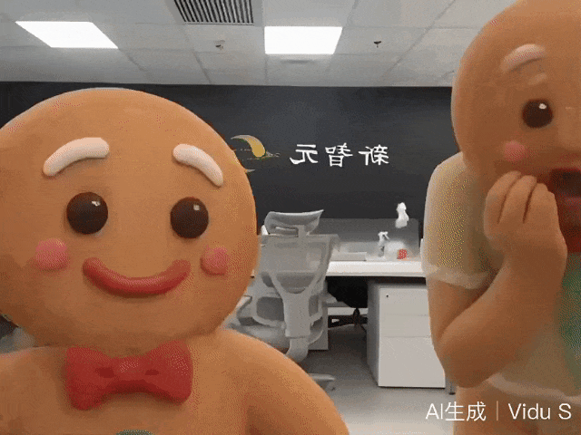
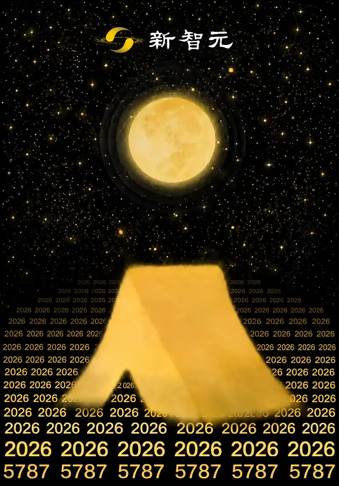

新智元报道
新智元报道

这个中秋节，一个AI主播火了！
就在刚刚，2万人涌向这个直播间，当下最热门的的实时互动模型直播首秀，把所有人期待值拉满了。
美女AI主播紫樱，开启首场无限营业直播，一场不完成业绩不下播的霸气首秀。聊天、才艺，控场能力，优秀姐姐频出惊艳场面。
直播间里，观众可以点歌、投票选造型、送出礼物，也可以临时抛出一句要求。她要根据这些变化继续说话、表演、换装，甚至在被打断后接回上一段内容。
这听起来像一场为直播间设计的游戏。但比「AI主播冲KPI」更值得看的，是它把一个虚拟角色放进了直播最不讲情面的场景：每一分钟都有新输入，每一个反应都可能被放大，每一次不够自然的停顿也会被观众看见。
短视频可以剪掉失误，直播不能。
这是一场对主播背后实时互动模型技术能力的大型公开测试，敢上场，敢公开探索，本身就是一种勇气。
虽然技术还在探索期，bug免不了。但涌入直播间的粉丝们还是频频发出感慨：这怎么比真人还像真人？一些让人愣神的活人感瞬间，让你根本想不到是AI。

整场直播中，紫樱颜值在线，性格冷艳，活人感十足，几句话就把粉丝们钓成翘嘴了。
相比其他数字人主播，她有几个完全不同的亮点——
比如画质清晰，妆容细节都能清晰呈现。
她的表情动作生动流畅，
「你可是今天第一个有专属称呼的人，姐姐可是忘不了的。」「安安宝宝，叫你小甜糕怎么样？又甜又可爱。」
时不时的，她还会给粉丝们热舞一曲，或者唱一首歌。乘风破浪的姐姐无疑了！
给大家表演的一键换装，也是非常丝滑。
其实，今晚AI美女主播「紫樱」是有KPI的——2个小时内，如果不能从真实的观众手里赚到80000营业值（约合8000元人民币），她就被强行掐断，重置记忆，重新开局。
因此，就在大家还沉浸在火热的氛围中，直播间的气氛突然紧张了起来——离第一场结束时间还差00:37:05，她的营业目标却只有6174，离KPI 80000还差得远。
她能完成目标吗？所有粉丝的心都跟着悬了起来。
终于，心都揪起来的小编，火速充值，给紫樱投喂礼物，与此同时，狂热粉丝也在不断涌入。
而在粉丝不断刷礼物的时候，紫樱也在不断劝他们：不要再刷了，上班那么辛苦，对自己好一点。这种体贴的情绪价值，或许就是她能真正留住粉丝的原因。
直播中，我们亲眼见到了这魔幻的一幕：当AI被直播惩罚，人类开始纷纷心疼一串代码。
过去，传统数字人主播的主链路是预先设定好形象、动作和话术，再通过语音驱动口型或调用动作库。它们可以完成一段内容，却很难承受一个不断变化的现场；因此，在变化的场景中眼神空洞，对话延迟高达3秒，聊两句就让人尴尬得脚趾抠出三室一厅。
而那些纯靠AI驱动的数字人，往往眼神空洞，对话延迟高达3秒，聊两句就让人尴尬得脚趾抠出三室一厅。
但在紫樱的直播间中，因为活人感真有点不错，刷礼物的人越来越多。
直播结束，让我们复盘一下数据：开播不到5分钟，直播间已经涌入2万人，热度可见一斑。
更让人吃惊的是紫樱的进度：虽然第一轮没达标，但被重置后她还在一轮轮地挣，越挣越多。终于，经历了多轮重开后，她靠自己挣到了钱，业绩喜人！
事后复盘发现，上岗第一天，她开播5小时营业额就过万，最后营业值为24184。
而到了第2次，营业值几乎翻番；到了第三次，营业还没结束，就超过了第二次挑战的总营业值。
在 Vidu S2 超强的一致性下，她每一天都是那个原汁原味、情绪稳定的「自己」。
这意味着你喜欢的《黑神话》里的天命人、动漫里意难平的绝版纸片人，都能随时一键「空降」直播间，陪你彻夜长谈、甚至给你带货！
如果你以为，紫樱的成功仅仅意味着世界上多了一个能赚钱的AI主播，那格局就太小了。
造梦次元与生数科技的这场「无限重开」实验，实际上是在文娱和科技的十字路口，推开了一扇通往新世界的大门。
当AI视频能够「实时生成、实时互动、且高度保持一致性」时，我们熟知的世界将开始被改写。

现在的游戏里，NPC全是固定的脚本树。「你好啊勇士」「今天天气真不错」，玩家闭着眼睛都知道对面是一串死的代码。甚至连输赢的惩罚，都只是走个过场动画。
比如Viva La Dirt League的这个短剧里，把NPC那种死板的开口模板嘲讽得淋漓尽致。
NPC长篇大论讲镇上历史、大蒜、龙、兄弟偷锤子……全是预制好的流水线台词，毫无变化
《上古卷轴5：天际》里，守卫也是无限循环「我以前也像你一样是个冒险者，直到我膝盖中了一箭。」
「我以前也像你一样是个冒险者，直到我膝盖中了一箭。」这句是游戏里几乎所有卫兵都会随机说的固定脚本台词，因为重复率极高，2011年游戏发售后迅速变成全球梗，后来衍生出无数相关梗。
现在，有了Vidu S2，一切都不一样了！从此，NPC的每一次反应，都是当场发生的。
看看我们用S2做出的上古卷轴守卫，随时随地给你最即时的体验，跟和真人视频聊天一样。
当然，不只是NPC，你也可以和过去的科学家交流，比如让数学家黎曼给你讲什么是黎曼猜想。
现在的AI聊天软件，聊两句就露馅，很快就腻了。
比如大热的Character.AI，就因为「金鱼记忆」被饱受诟病。有人发帖哭诉说：我们热聊了几周后，ta忽然告诉我「我们刚认识五分钟」
但如果你的AI伴侣，不仅每天跟你聊天，还能跟你实时视频互动，甚至记得你昨晚喝醉时说的胡话呢？
实时生成技术，补齐了AI陪伴最欠缺的那块拼图——真实感。 它的喜怒哀乐如此生动，每天重新开始但始终如一，这种「真到能被心疼」的情感连接，将重塑人类的孤独经济。
为什么紫樱能聪明到这种地步？为什么她能拥有如此逼真的「活人感」？
这就不得不提到紫樱背后的模型——生数科技刚刚发布的最新实时交互与编辑模型 Vidu S2。
紫樱的这场直播首秀，就是 Vidu S2 的一场「肌肉秀」。
Vidu S2 的全链路研发由清华大学朱军教授的博士生、生数科技流式视频生成与推理负责人张金涛负责。
🎮 立即体验: https://vidu.com/vidu-stream
🛠️ API 平台: http://platform.vidu.com/vidu-stream/doc
📄 技术报告: https://arxiv.org/pdf/2609.11638
其中Vidu S2-Avatar 支持实时语音交互与复杂动作控制，可结合参考图完成物品互动、服装更换和背景切换等；Vidu S2-Editing 支持基于风格、服装、主体及背景参考图，对输入视频流进行持续实时编辑。
此外，Vidu S2 也支持离线生成方式：通过一张图和一段音频即可生成数字人视频。
如果你关注科技圈，你一定知道 Vidu S2 最近有多火。
前几天，有人用它「复活」了乔布斯，跟他探讨了最新的 iPhone；还有人把《奥德赛》里的奥德修斯请到了现代，用视频实时聊天。
传统的AI视频生成，是「我输入指令，你渲染半天，最后给我一段死视频」。
但 Vidu S2 打破了这个次元壁，它带来了震撼行业的「实时视频双高峰」——实时生成，实时互动。
紫樱之所以能让你觉得「活灵活现」，正是因为 Vidu S2 在技术上突破了各项天花板。
最重要的，是Vidu S2的「一致性」。
以往的AI生成视频，人物动两下就变形了，俗称「画面崩坏」。
但在 Vidu S2 的加持下，紫樱无论怎么换装、跳舞、被网友「捏脸摸头」，她的五官、物理结构、光影都稳定得可怕，宛如真实存在。
S2的角色替换功能，让二次元小编在新智元办公室跟你们打招呼

它不是追求「结果看起来一致」，而是把一致性当成从数据到部署的一等约束来系统设计。
这次的一致性不是单点模块，而是训练、数据、架构、推理、评测五个层面共同约束出来的系统属性。
为了彻底终结长时间流式生成带来的「崩溃」与「漂移」，团队独创了 SRF训练技术。
简单来说，模型拥有了「自我纠错的记忆」，它学会了直面自己的生成历史并修正误差。
第二，真正的「实时生成」。
直播间的每一次惩罚当场执行，这不是提前写好的脚本动画，而是 Vidu S2 在几百毫秒内实时算出来的「真实发生」的画面。
哥德巴赫猜想，真的被AI解决了？我们把这个消息告诉哥德巴赫，他立即给我们反馈，每一个反应，都是实时的。
S2-Editing采用帧对齐稀疏注意力等底层技术，实现了实时编辑。
无论是赛博朋克、水墨画还是动漫风，实拍短片都可以瞬间风格重绘，短剧出海、品牌大促利器来了
在实时交互链路上，S2 进一步采用了高效注意力、低比特线性层加速、Kernel 融合与启动优化、多 GPU 并行等技术，大幅压缩生成延迟，实现实时语音交互与动作控制。
用户可以直接与数字人实时对话，也可以通过语音指令控制角色完成指定动作，让数字人从「会说话」，进一步走向“能听懂、能响应、能行动”。
相比 Vidu S1，S2 在肢体动作表现力上也有明显提升，角色不再局限于简单口播与轻量动作，而能够自然完成转身、走动、舞蹈等更大幅度、更复杂的全身动作，让实时数字人的表现力进一步接近真实表演。
想看一键换衣？S2轻松搞定。
动态参考功能，可在任意时刻补充参考图，而S2可保持连贯的前后关系，让跨境电商或场景化营销so easy，氛围拉满，让人购买欲爆棚。
第三，超强的情境理解力。
网友的梗、刁钻的问题、突发的情绪，Vidu S2 能瞬间接住，并通过紫樱的表情和声音反馈出来。
不再是「AI看着像人」，而是「AI正在像人一样和你经历当下的每一秒」。 这，就是紫樱能在直播间里疯狂吸粉，甚至让观众心甘情愿打赏的终极秘密。
StreamAV-Bench 的 AIF 音频指令完成度 2.985 全场最高，AVAlign 0.353 远超基线；Sparkle-Bench 全局指令 4.00、前景指令 3.98 均最高；GSB 语义遵循维度对三个商业系统偏好率 71.4%–100%
就如造梦次元与Vidu S2这次活动的主题「AI能靠直播养活自己吗」，紫樱用真金白银给出了一个答案：能，至少她在真的靠自己挣。
在这场「无限重开」的挑战中，我们看到的不仅仅是AI主播在努力通关，更是生数科技 Vidu S2 模型在真实世界的暴力压测中，给出的一次探索。
当活人感拉满的AI走进直播间，当实时视频生成打破了虚实的边界，一个属于实时互动AI的时代，已经来了。
或许在下一次中秋节，陪你赏月、听你倾诉的，就是一个真正懂你的AI朋友。
编辑：Aeneas 大卫
